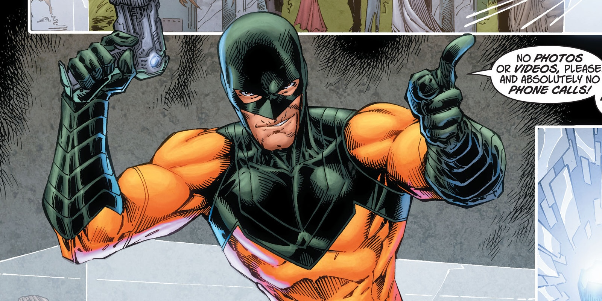
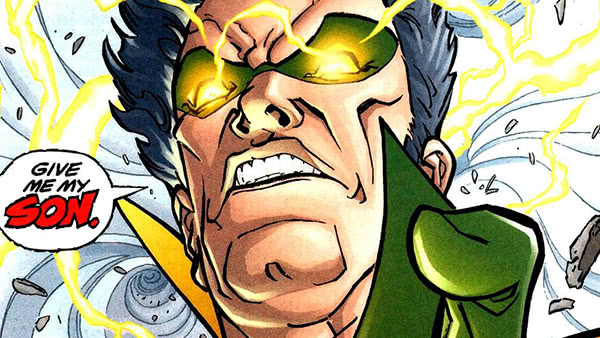
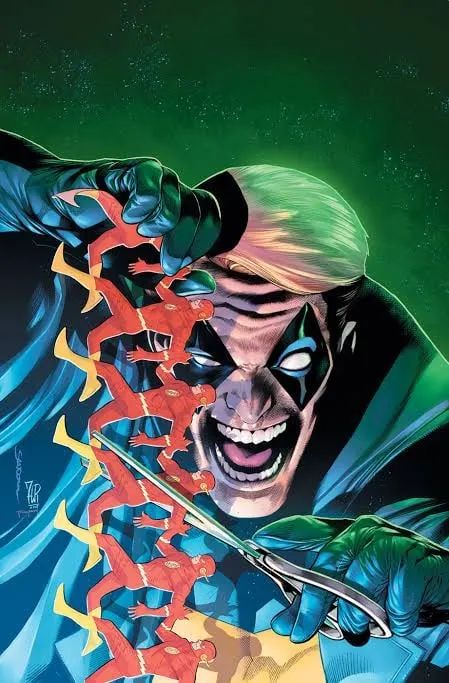

FLASH REVERSO
 Nome: Eobard Thawne
Alter Ego: Flash Reverso (Professor Zoom)
Poderes/Habilidades: Supervelocidade, viagem no tempo, vibração
molecular e Força de Aceleração Negativa.
Ocupação: Criminoso, velocista e viajante do tempo.
Primeira aparição: The Flash #139 (1963).
Nome: Eobard Thawne
Alter Ego: Flash Reverso (Professor Zoom)
Poderes/Habilidades: Supervelocidade, viagem no tempo, vibração
molecular e Força de Aceleração Negativa.
Ocupação: Criminoso, velocista e viajante do tempo.
Primeira aparição: The Flash #139 (1963).
Para cada ação, há uma reação igual e oposta. E a cada passo que o
Flash dá em direção ao futuro, alguém do futuro corre para trás no
tempo para detê-lo. O velocista vilão conhecido como Flash Reverso
nasceu no século 25, seu nome é Eobard Thawne e cresceu
idolatrando o Flash e estudando o seu legado. No entanto, à medida
que aprendia mais sobre o Flash, Eobard descobriu como sua própria
vida estava ligada à de seu herói, destinado a se tornar um dos
maiores vilões de Barry Allen, uma revelação que levou Eobard a
ficar desequilibrado. Quando ele finalmente replicou o acidente
químico que concedeu supervelocidade ao Flash, Eobard assumiu uma
nova identidade, a do Flash Reverso, uma subversão perversa de
tudo o que o Flash representa, o seu "reverso". Com poderes e
habilidades semelhantes aos do Flash, o Flash Reverso é
determinado a se opor e destruir tudo o que é importante para o
Flash. Sua habilidade de viajar no tempo lhe permite atacar o
herói em quase qualquer momento da história. No entanto, ele é
incapaz de mata-lo, pois o Flash Reverso não existiria se ele
matasse sua própria inspiração. Em vez disso, ele faz tudo ao seu
alcance para atormentar e torturar o nosso velocista escarlate.
CAPITÃO FRIO
 Nome: Leonard Snart
Alter Ego: Capitão Frio
Poderes/Habilidades: Arma congelante, geração de frio extremo e
criação de superfícies congeladas.
Ocupação: Criminoso profissional e líder dos Rogues.
Primeira aparição: Showcase #8 (1957).
Nome: Leonard Snart
Alter Ego: Capitão Frio
Poderes/Habilidades: Arma congelante, geração de frio extremo e
criação de superfícies congeladas.
Ocupação: Criminoso profissional e líder dos Rogues.
Primeira aparição: Showcase #8 (1957).
Leonard Snart é o vilão líder dos rogues, uma gangue de vilões que
odeiam o Flash, além de ser um dos inimigos mais antigos dele.
Leonard Snart pode ser um criminoso, mas ele não é sem honra, em
seus atos como vilão, há poucos bandidos tão simpáticos quanto o
Capitão Frio. Vendo-se como um supervilão operário e trabalhador,
Cold tem um código de honra que o impede de matar pessoas
inocentes, embora esteja mais do que feliz em roubá-las. Sua
principal "habilidade" é uma arma fria e de congelamento
sofisticada, rivalizando com o Flash desde seus primeiros dias
como vilão. Embora seja um criminoso que adora assaltos
bem-sucedidos, o lado nobre de Cold pode ser reconhecido, ajudando
heróis em mais de uma ocasião. Mas faça o que fizer, não o
confunda com o vilão do Batman, Sr Frio. Ele odeia isso.
CAPITÃO BUMERANGUE
 Nome: George "Digger" Harkness
Alter Ego: Capitão Bumerangue
Poderes/Habilidades: Pontaria excepcional, combate corpo a corpo e
domínio de bumerangues convencionais e tecnológicos.
Ocupação: Criminoso profissional e membro do Esquadrão Suicida.
Primeira aparição: The Flash #117 (1960).
Nome: George "Digger" Harkness
Alter Ego: Capitão Bumerangue
Poderes/Habilidades: Pontaria excepcional, combate corpo a corpo e
domínio de bumerangues convencionais e tecnológicos.
Ocupação: Criminoso profissional e membro do Esquadrão Suicida.
Primeira aparição: The Flash #117 (1960).
Um atirador Australiano com um talento incomparável com sua arma
um pouco "peculiar", o Capitão Bumerangue teve duas carreiras,
como inimigo do Flash e membro do Esquadrão Suicida. Não é incomum
que supervilões tenham nomes autoexplicativos, mas o Capitão
Bumerangue pode ser considerado o primeiro da lista. Mestre em
bumerangues e lutas baseadas neles, Digger Harkness começou sua
carreira promovendo bumerangues de brinquedo. Depois que ele
imigrou da Austrália para os Estados Unidos, sua vida alavancou de
maneira brusca para a vilania quando ele decidiu usar suas
habilidades para roubar joias, desenvolvendo uma linha de
bumerangues armados, aterrorizando Central City até entrar em
conflito com o Flash.
MESTRE DOS ESPELHOS

Nome: Sam Scudder
Alter Ego: Mestre dos Espelhos
Poderes/Habilidades: Tecnologia de espelhos, criação de ilusões e
acesso a dimensões espelhadas.
Ocupação: Criminoso profissional e membro dos Rogues.
Primeira aparição: The Flash #105 (1959).
Sam Scudder, mais conhecido como Mestre dos Espelhos, é um dos
inimigos mais engenhosos do Flash, famoso por sua capacidade de
utilizar espelhos para criar ilusões, atravessar superfícies
refletoras e confundir seus adversários. Originalmente um
criminoso comum, Sam descobriu maneiras de explorar as
propriedades da luz e dos reflexos por meio de tecnologias
avançadas, desenvolvendo uma arma capaz de manipular espelhos de
formas extraordinárias. Adotando o codinome Mestre dos Espelhos,
ele passou a utilizar seus dispositivos para cometer roubos,
escapar das autoridades e desafiar o Flash em confrontos repletos
de armadilhas e ilusões. Sua tecnologia permite que ele entre em
dimensões espelhadas, crie duplicatas ilusórias e utilize
superfícies refletoras como passagens para surpreender seus
inimigos. Essas habilidades tornam seus confrontos especialmente
complicados para o velocista escarlate, pois nem mesmo a sua
supervelocidade é suficiente para superar facilmente seus truques.
Ao longo de sua trajetória, Sam Scudder tornou-se um dos
integrantes mais conhecidos dos Rogues, o grupo de criminosos que
frequentemente enfrenta o Flash. Após sua morte, o manto do Mestre
dos Espelhos foi assumido por Evan McCulloch, um mercenário
Escocês que aperfeiçoou o uso da tecnologia de espelhos e
continuou a desafiar o herói, mantendo vivo o legado de um dos
vilões mais criativos e imprevisíveis de Central City.
MAGO DO TEMPO

Nome: Mark Mardon
Alter Ego: Mago do Tempo
Poderes/Habilidades: Manipulação climática por meio do Bastão do
Tempo, incluindo tempestades, raios, ventos e nevascas.
Ocupação: Criminoso profissional e membro dos Rogues.
Primeira aparição: The Flash #110 (1959).
Mark Mardon é um dos inimigos mais perigosos do Flash, famoso por
sua capacidade de manipular as condições climáticas e transformar
o próprio clima em uma arma. Originalmente ele era um criminoso
que buscava enriquecer por meio de roubos, ele então desenvolveu
um dispositivo conhecido como Bastão do Tempo, capaz de controlar
fenômenos meteorológicos como tempestades, ventos fortes, raios e
nevascas, então, começou a utilizar essa tecnologia para cometer
crimes e a aterrorizar Central City, ficando conhecido como mago
do tempo, entrando em confronto com o Flash, cuja velocidade
frequentemente lhe permitia escapar de seus ataques devastadores.
Ao longo de sua trajetória, Mardon demonstrou ser um adversário
extremamente perigoso, capaz de provocar desastres naturais e
alterar o ambiente ao seu redor para obter vantagem sobre seus
inimigos. Apesar de depender principalmente de seu equipamento,
sua habilidade em utilizá-lo torna ele uma ameaça grande,
dificultando bastante ações do Flash. Ele também se tornou um dos
membros dos Rogues.
TRAPACEIRO

Nome: James Jesse
Alter Ego: Trapaceiro
Poderes/Habilidades: Acrobacia, ilusionismo, criação de armadilhas
e utilização de brinquedos e dispositivos tecnológicos como armas.
Ocupação: Criminoso, ilusionista e antigo artista de circo.
Primeira aparição: The Flash #113 (1960).
James Jesse, mais conhecido como Trapaceiro, é um dos inimigos
mais loucos do Flash, famoso por suas armadilhas elaboradas,
truques mirabolantes e brinquedos transformados em armas, ele se
inspirou no lendário artista de fugas Harry Houdini, fazendo James
abandonar uma vida comum para se tornar um mestre do engano e da
ilusão. Filho de um trapezista de circo, ele cresceu fascinado
pelo mundo das acrobacias e dos espetáculos, desenvolvendo
habilidades que mais tarde utilizaria para cometer seus crimes
além de utilizar engenhocas, explosivos disfarçados de brinquedos,
sapatos especiais e dispositivos capazes de confundir seus
adversáriose, adotando o nome de vilão "Trapaceiro". Seus crimes
acabaram chamando a atenção do Flash, com quem desenvolveu uma
rivalidade marcada por perseguições, truques e confrontos
imprevisíveis. Apesar de não possuir supervelocidade ou poderes
sobre-humanos, o Trapaceiro compensa essa desvantagem com sua
inteligência, criatividade e capacidade de surpreender seus
inimigos.
ONDA TÉRMICA
 Nome: Mick Rory
Alter Ego: Onda Térmica (Heat Wave)
Poderes/Habilidades: Utilização de lança-chamas, resistência ao
calor proporcionada por seu traje e conhecimentos sobre combustão.
Ocupação: Criminoso profissional e membro dos Rogues.
Primeira aparição: The Flash #140 (1963).
Nome: Mick Rory
Alter Ego: Onda Térmica (Heat Wave)
Poderes/Habilidades: Utilização de lança-chamas, resistência ao
calor proporcionada por seu traje e conhecimentos sobre combustão.
Ocupação: Criminoso profissional e membro dos Rogues.
Primeira aparição: The Flash #140 (1963).
O amor de Mick Rory pelo fogo começou inocentemente quando ele era
criança, mas tornou-se mortal no momento em que ele incendiou sua
casa de infância e observou de longe enquanto sua família era
consumida pelas chamas. À medida que envelhecia, a piromania de
Mick tornou-se incontrolável, e inspirado pelo bando de
supervilões fantasiados de Central City, os Rogues, Mick inventou
um lança-chamas do tamanho de uma arma de fogo e um traje
retardante de chamas para si mesmo, adotando o alter ego de “Onda
Térmica” quando começou a canalizar seus impulsos destrutivos para
o lucro. Apesar de seu relacionamento complicado com o líder dos
Rogues, Capitão Frio, Mick se tornou um membro oficial da
organização criminosa com o tempo.
GORILA GRODD
 Nome: Grodd
Alter Ego: Gorila Grodd
Poderes/Habilidades: Superinteligência, telepatia, controle
mental, telecinese e força física sobre-humana.
Ocupação: Supervilão, conquistador e líder de Gorilla City.
Primeira aparição: The Flash #106 (1959).
Nome: Grodd
Alter Ego: Gorila Grodd
Poderes/Habilidades: Superinteligência, telepatia, controle
mental, telecinese e força física sobre-humana.
Ocupação: Supervilão, conquistador e líder de Gorilla City.
Primeira aparição: The Flash #106 (1959).
Mesmo que muitos dos inimigos mais perigosos do Flash sejam
criminosos com truques ou velocistas malignos, há um inimigo do
Homem Mais Rápido do Mundo que se destaca, o macaco telepático
hiperinteligente conhecido como Gorilla Grodd. Ele é o produto de
um encontro casual com uma raça alienígena, Grodd e seu povo
evoluíram além dos gorilas comuns que viviam em sua porção da
selva africana e desenvolveram superinteligência, juntamente com
uma ampla gama de outros poderes mentais. Mas enquanto o resto de
seu povo escolheu viver separado do mundo pacificamente, Grodd só
procurou conquistar a humanidade para que ele pudesse governá-la.
Entrando em conflito pela primeira vez com a versão de Barry Allen
do Flash, Grodd foi uma pedra no sapato não apenas dele por muitos
anos, mas também de seu sucessor Wally West.
ZOOM
 Nome: Hunter Zolomon
Alter Ego: Zoom
Poderes/Habilidades: Manipulação do tempo relativo,
supervelocidade aparente e alteração da percepção temporal.
Ocupação: Antigo perfilador criminal e supervilão.
Primeira aparição: Flash: Secret Files #3 (2001).
Nome: Hunter Zolomon
Alter Ego: Zoom
Poderes/Habilidades: Manipulação do tempo relativo,
supervelocidade aparente e alteração da percepção temporal.
Ocupação: Antigo perfilador criminal e supervilão.
Primeira aparição: Flash: Secret Files #3 (2001).
A vida de Hunter Zolomon foi marcada por tragédias brutais, quando
criança, ele descobriu que seu pai era um serial killer que
assassinou sua mãe depois que ela tentou detê-lo. Esta
tragédia inspirou Hunter a estudar psicologia e criminologia e a
ingressar no FBI, mas um erro de cálculo durante um caso levou à
morte de seu sogro. Então, as coisas ficaram realmente sombrias
depois que um ataque do Gorila Grodd deixou Hunter paralisado, fazendo ele
implorar ao seu amigo Flash que voltasse no tempo e impedisse que
o ataque acontecesse, mas Flash recusou. Hunter então tentou voltar no tempo sozinho, levando a
uma explosão acidental, outra tragédia acontecia mas que o tornou mais do
algo a mais. Ele acabou ganhando a habilidade de supervelocidade e
adotou nome Zoom, dedicando sua vida a garantir que as
pessoas vivenciassem suas próprias tragédias pessoais para
torná-las melhores heróis, começando com o Flash. Zoom é
totalmente diferente do Flash e de outros velocistas, o tornando um dos inimigos mais perigosos e
desafiadores do velocista escarlate. Sua velocidade não vem da Força de
Aceleração, mas de alterar seu próprio tempo relativo,
desacelerando ou acelerando o mundo ao seu redor, permitindo que
ele corra ainda mais rápido que o Flash. Seu senso distorcido de
heroísmo e vilania levou Zoom a ameaçar continuamente não apenas
aqueles mais próximos do Flash, mas também inúmeros heróis em todo
o Universo DC.